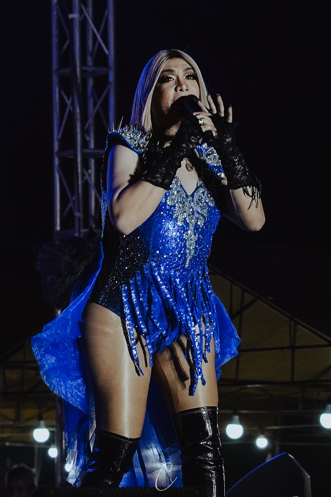
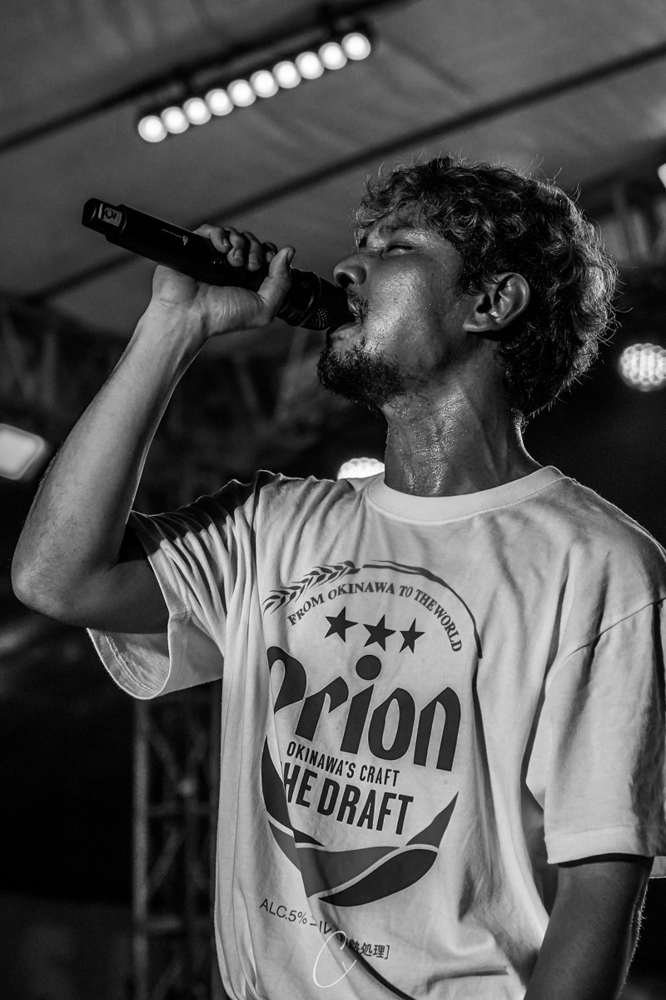
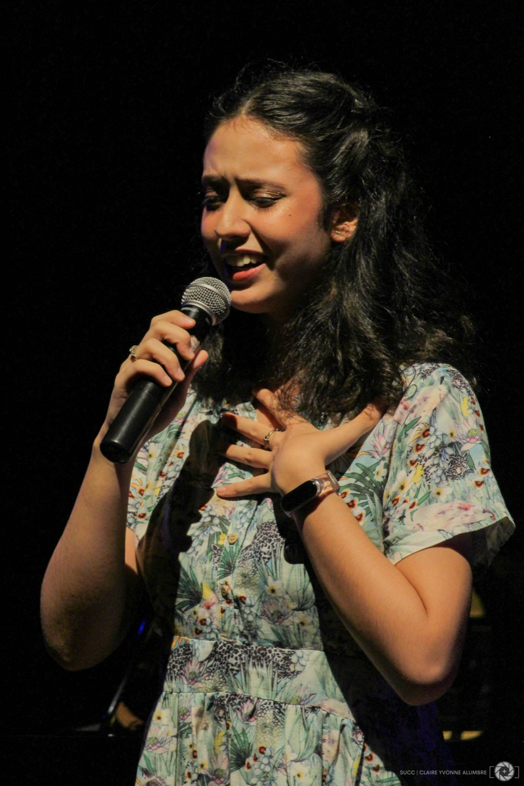
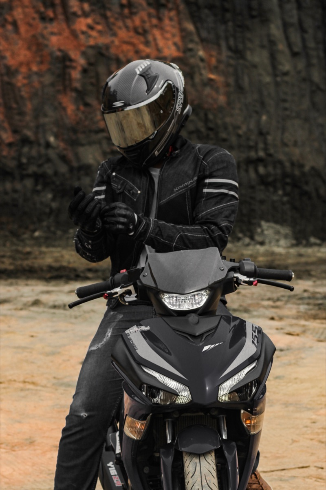
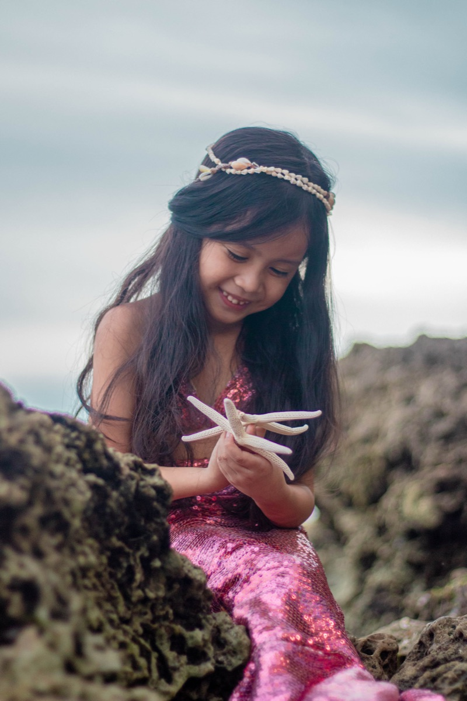

Close-up portraits of singers, performers, and graduates, shot on stage and out in the open.
Most of this set is stage portraiture: singers and performers caught mid-song, framed close with stage lighting, smoke, and sequins doing a lot of the work — from a black-and-white portrait of a man singing into a microphone to a performer in a blue sequined gown.
A few frames step outside the stage entirely — two graduation portraits shot outdoors, a motorcycle rider in full helmet and jacket, and a young girl posing in a mermaid tail costume on rocks by the sea.
All 8 pieces from this collection.







PHOTOGRAPHS